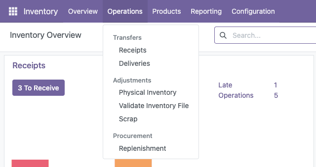
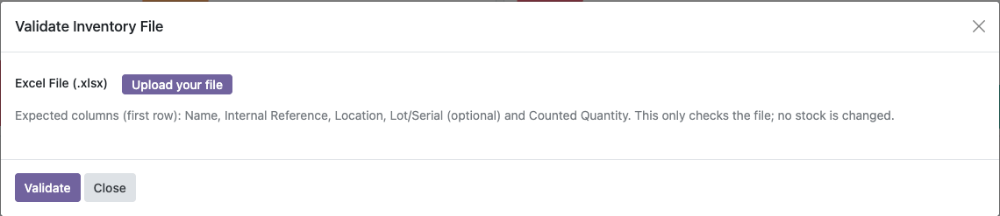
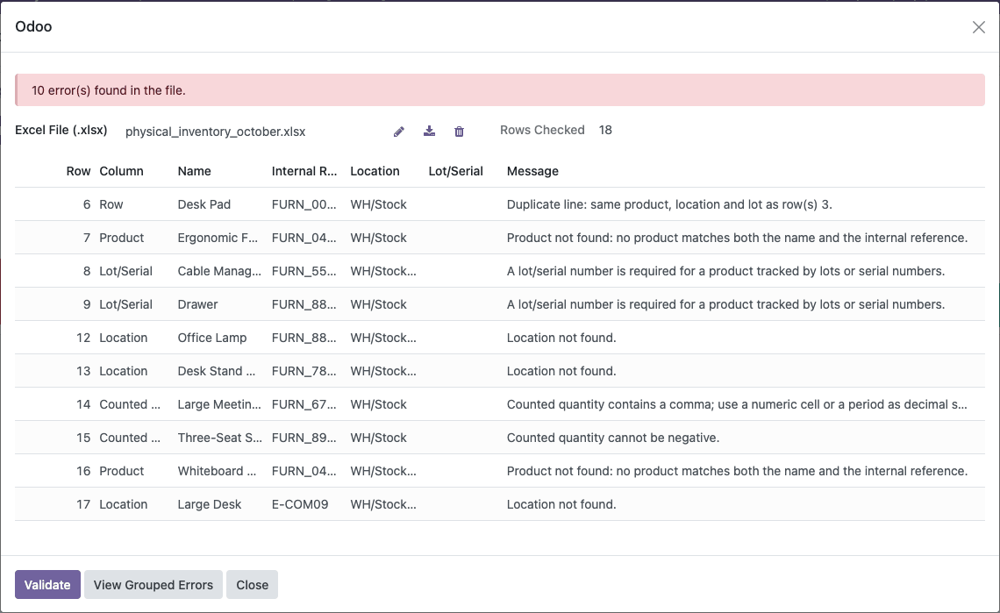
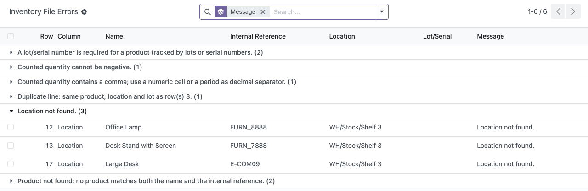
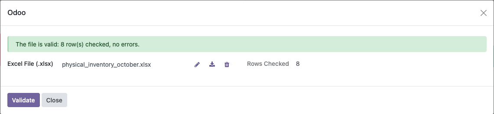

<section class="py-4">
  <div class="container" style="max-width: 900px;">
    <div class="nav nav-pills mb-3" aria-label="Language">
      <a class="nav-link active" id="tab-en"
         data-bs-toggle="tab" href="#lang-en">English</a>
      <a class="nav-link" id="tab-es"
         data-bs-toggle="tab" href="#lang-es">Espa&ntilde;ol</a>
    </div>
    <div class="tab-content">
      <div class="tab-pane fade show active" id="lang-en">
<section lang="en" class="py-2">
    <div class="d-flex align-items-center gap-3 mb-4">
        
        <div>
            <h1 class="h3 mb-1">Stock Inventory Validator</h1>
            <p class="mb-0" style="opacity: .75;">Find every mistake in your physical inventory file before it reaches your stock</p>
        </div>
    </div>

    <p>A physical inventory count usually arrives as an Excel file typed by several people, and its mistakes only surface while it is being loaded, one at a time: a product code with a typo, a shelf that does not exist, a lot nobody wrote down. This module checks the whole file first and lists every problem, row by row, on one screen. Fix the file, upload it again, and repeat until it comes back clean. Nothing in your stock is changed while you check.</p>

    <ul class="list-unstyled mt-4">
        <li class="mb-2"><span class="text-success fw-bold">&#10003;</span> See all the errors at once, with the Excel row number, instead of finding them one at a time</li>
        <li class="mb-2"><span class="text-success fw-bold">&#10003;</span> Catches duplicated lines, unknown products, missing lots or serial numbers, wrong locations and invalid quantities</li>
        <li class="mb-2"><span class="text-success fw-bold">&#10003;</span> Works with column headers in English or Spanish, and never modifies your inventory</li>
    </ul>

    <h2 class="h4 mt-5 mb-3">How it works</h2>

    <h3 class="h5 mt-4">1. Open it next to Physical Inventory</h3>
    <p>In Inventory, open <strong>Operations &gt; Adjustments &gt; Validate Inventory File</strong>. It sits right under Physical Inventory and is available to inventory administrators.</p>
    

    <h3 class="h5 mt-4">2. Upload your Excel file</h3>
    <p>The file needs one header row with the columns Name, Internal Reference, Location, Lot/Serial (optional) and Counted Quantity. Upload it and press <strong>Validate</strong>.</p>
    

    <h3 class="h5 mt-4">3. Read every error in one list</h3>
    <p>The same window comes back with how many rows were checked and one line per problem: the Excel row, the column at fault, the product and location written in that row, and what is wrong with it. Correct the file and validate again, as many times as you need.</p>
    

    <h3 class="h5 mt-4">4. Group the errors to fix them by kind</h3>
    <p>With a long file, <strong>View Grouped Errors</strong> opens the same errors in a new browser tab, grouped by message with a count on each group, so the window you are working in stays open. A wrong shelf repeated on fifty rows becomes one group to fix in one go.</p>
    

    <h3 class="h5 mt-4">5. Load the file once it comes back clean</h3>
    <p>When nothing is wrong, the window says so and how many rows it checked. The file is now ready to be loaded into your physical inventory.</p>
    

    <h2 class="h4 mt-5 mb-3">Good to know</h2>
    <ul>
        <li class="mb-2">It only checks the file. It does not load the count into your inventory or change any quantity; loading it is a separate step.</li>
        <li class="mb-2">Only the first sheet is read, and only Excel files (.xlsx). Empty rows are skipped, and the column headers can be in English or in Spanish.</li>
        <li class="mb-2">A product is found only when its name and internal reference both match the same product. Archived products and locations are not found.</li>
        <li class="mb-2">Locations can be written as their full path (WH/Stock/Shelf 1) or by their name alone, and must be internal stock locations.</li>
        <li class="mb-2">A quantity typed as text with a comma, such as 1,5 or 1,000, is rejected on purpose, because the comma can be read either as a decimal or as a thousands separator. Use a number cell or a period for decimals.</li>
        <li class="mb-2">A product tracked by lots or serial numbers needs one on every row, except when its counted quantity is 0.</li>
        <li class="mb-2">With several companies, the file is checked against the products and locations of the company you are working in, plus those shared by all companies.</li>
    </ul>

    <p class="mt-4 small" style="opacity: .6;">Kaitim &middot; Odoo 18.0</p>
</section>

      </div>
      <div class="tab-pane fade" id="lang-es">
<section lang="es" class="py-2">
    <div class="d-flex align-items-center gap-3 mb-4">
        
        <div>
            <h1 class="h3 mb-1">Stock Inventory Validator</h1>
            <p class="mb-0" style="opacity: .75;">Encuentre todos los errores de su archivo de inventario f&iacute;sico antes de que lleguen a su inventario</p>
        </div>
    </div>

    <p>El conteo de un inventario f&iacute;sico suele llegar en un archivo de Excel capturado por varias personas, y sus errores solo aparecen al cargarlo, uno por uno: una referencia mal escrita, un anaquel que no existe, un lote que nadie anot&oacute;. Este m&oacute;dulo revisa primero todo el archivo y muestra en una sola pantalla todos los problemas, fila por fila. Corrija el archivo, vuelva a subirlo y repita hasta que no tenga errores. Su inventario no se modifica mientras revisa.</p>

    <ul class="list-unstyled mt-4">
        <li class="mb-2"><span class="text-success fw-bold">&#10003;</span> Vea todos los errores a la vez, con el n&uacute;mero de fila de Excel, en lugar de encontrarlos uno por uno</li>
        <li class="mb-2"><span class="text-success fw-bold">&#10003;</span> Detecta l&iacute;neas duplicadas, productos desconocidos, lotes o n&uacute;meros de serie faltantes, ubicaciones incorrectas y cantidades no v&aacute;lidas</li>
        <li class="mb-2"><span class="text-success fw-bold">&#10003;</span> Acepta encabezados de columna en ingl&eacute;s o en espa&ntilde;ol y nunca modifica su inventario</li>
    </ul>

    <h2 class="h4 mt-5 mb-3">C&oacute;mo funciona</h2>

    <h3 class="h5 mt-4">1. &Aacute;bralo junto a Inventario f&iacute;sico</h3>
    <p>En Inventario, abra <strong>Operaciones &gt; Ajustes &gt; Validar archivo de inventario</strong>. Est&aacute; justo debajo de Inventario f&iacute;sico y lo pueden usar los administradores de inventario.</p>
    

    <h3 class="h5 mt-4">2. Suba su archivo de Excel</h3>
    <p>El archivo necesita una fila de encabezados con las columnas Nombre, Referencia interna, Ubicaci&oacute;n, Lote/Serie (opcional) y Cantidad contada. S&uacute;balo y presione <strong>Validar</strong>.</p>
    

    <h3 class="h5 mt-4">3. Revise todos los errores en una lista</h3>
    <p>La misma ventana vuelve a abrirse con el n&uacute;mero de filas revisadas y una l&iacute;nea por problema: la fila de Excel, la columna con el error, el producto y la ubicaci&oacute;n escritos en esa fila, y qu&eacute; est&aacute; mal. Corrija el archivo y valide de nuevo, las veces que necesite.</p>
    

    <h3 class="h5 mt-4">4. Agrupe los errores para corregirlos por tipo</h3>
    <p>Con un archivo largo, <strong>Ver errores agrupados</strong> abre los mismos errores en una nueva pesta&ntilde;a del navegador, agrupados por mensaje y con el total de cada grupo, para que la ventana en la que trabaja siga abierta. Un anaquel mal escrito en cincuenta filas se convierte en un solo grupo que se corrige de una vez.</p>
    

    <h3 class="h5 mt-4">5. Cargue el archivo cuando ya no tenga errores</h3>
    <p>Cuando todo est&aacute; bien, la ventana lo indica junto con el n&uacute;mero de filas revisadas. El archivo ya est&aacute; listo para cargarse en su inventario f&iacute;sico.</p>
    

    <h2 class="h4 mt-5 mb-3">Para tener en cuenta</h2>
    <ul>
        <li class="mb-2">Solo revisa el archivo. No carga el conteo en su inventario ni cambia ninguna cantidad; la carga es un paso aparte.</li>
        <li class="mb-2">Solo se lee la primera hoja, y solo archivos de Excel (.xlsx). Las filas vac&iacute;as se omiten y los encabezados de columna pueden estar en ingl&eacute;s o en espa&ntilde;ol.</li>
        <li class="mb-2">Un producto se encuentra solo cuando su nombre y su referencia interna coinciden con el mismo producto. Los productos y ubicaciones archivados no se encuentran.</li>
        <li class="mb-2">Las ubicaciones pueden escribirse con su ruta completa (WH/Stock/Shelf 1) o solo con su nombre, y deben ser ubicaciones internas de existencias.</li>
        <li class="mb-2">Una cantidad capturada como texto con coma, como 1,5 o 1,000, se rechaza a prop&oacute;sito, porque la coma puede leerse como decimal o como separador de miles. Use una celda num&eacute;rica o un punto para los decimales.</li>
        <li class="mb-2">Un producto con seguimiento por lotes o n&uacute;meros de serie necesita uno en cada fila, salvo cuando su cantidad contada es 0.</li>
        <li class="mb-2">Con varias empresas, el archivo se revisa contra los productos y ubicaciones de la empresa en la que trabaja, m&aacute;s los que comparten todas las empresas.</li>
    </ul>

    <p class="mt-4 small" style="opacity: .6;">Kaitim &middot; Odoo 18.0</p>
</section>

      </div>
    </div>
  </div>
</section>
